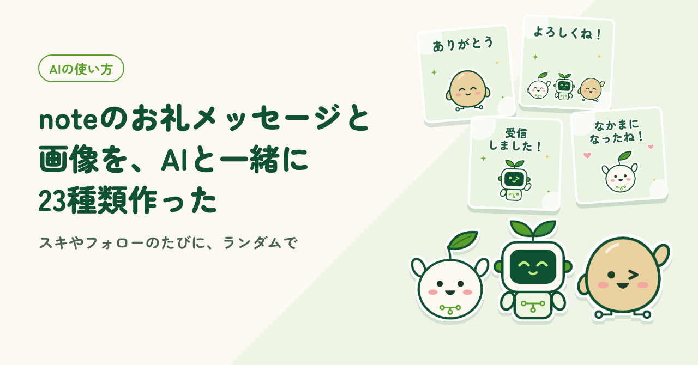
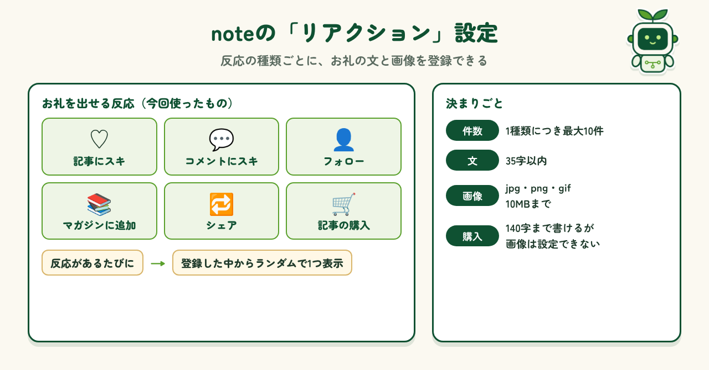
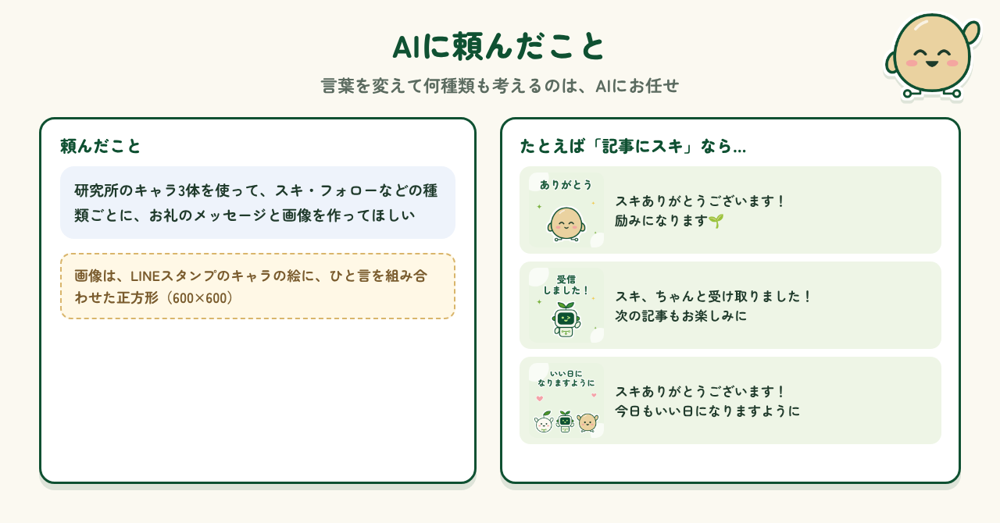
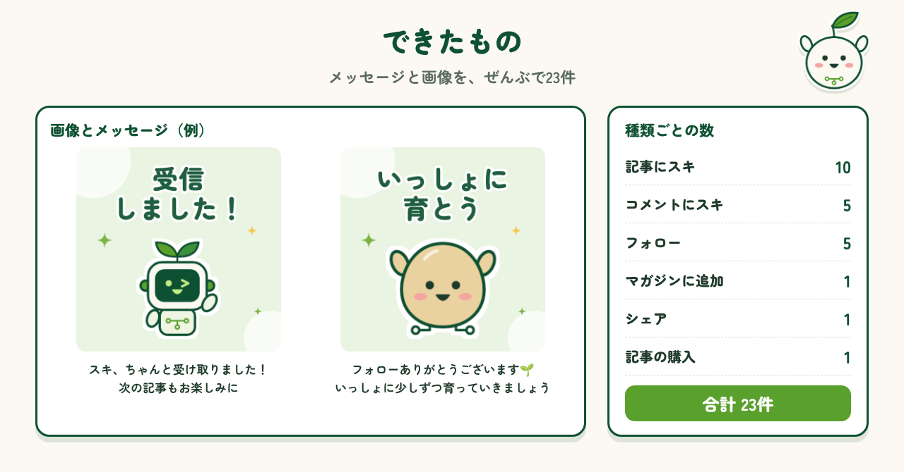
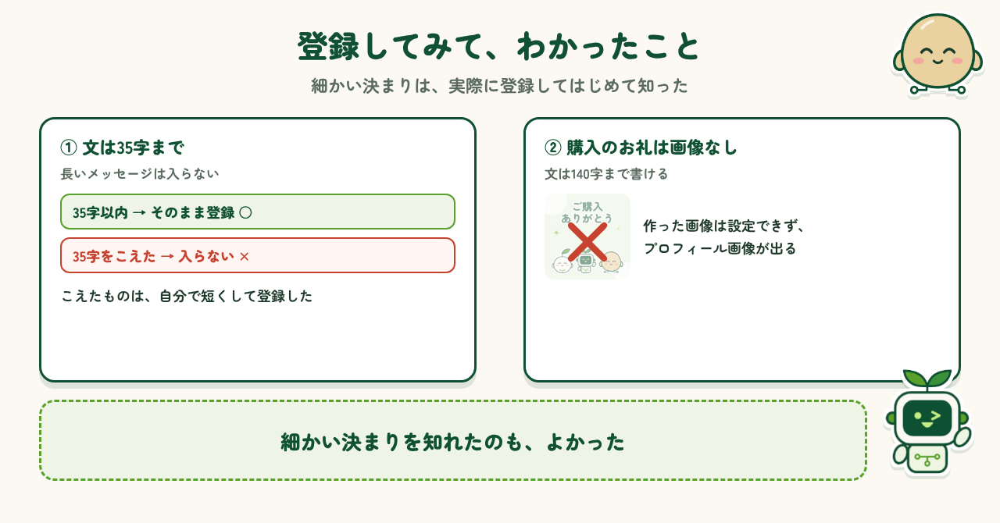

2026.10.26 公開
noteのお礼メッセージと画像を、AIと一緒に23種類作った
noteのスキやフォローで出るお礼のメッセージと画像を、AIと一緒に23種類作りました。作ってみてわかったnoteの決まりも紹介します。

はじめに
ほかの人の記事にスキやフォローをしたとき、その人オリジナルの画像とお礼のメッセージが出てきたことがあります。それを見て、自分もまねしてみたいと思いました。わたしのnoteは、最初から入っている「ありがとう！励みになります！」の1つだけ。せっかくなら、いろいろなパターンがランダムで出るほうが、押してくれた人も楽しいはずです。そこで、種類をたくさん作ってみることにしました。
noteの「リアクション」設定とは
noteには「リアクション」という設定があり、反応の種類ごとに、お礼の文と画像を登録できます。今回使ったのは、記事へのスキ、コメントへのスキ、フォロー、マガジンへの追加、シェア、記事の購入の6つです。1つの種類に最大10件まで登録でき、反応があるたびに、その中からランダムで1つが表示されます。文は35字以内、画像はjpg・png・gifで10MBまでです。

AIに頼んだこと
お礼の文を、言葉を変えて何種類も考えるのは大変です。こういうところは、AIにお任せしました。頼んだのは、研究所のキャラ3体を使って、スキやフォローなどの種類ごとに、お礼のメッセージと画像を作ってもらうことです。画像は、LINEスタンプで描いたキャラの絵に、「ありがとう」などのひと言を組み合わせた正方形です。できあがったものは、そのまま使えるものばかりで、とても助かりました。

できたもの
できたのは、メッセージと画像のセットが全部で23件です。最初に8件作り、もっと種類がほしくなって15件追加しました。内訳は、記事へのスキが10件、コメントへのスキとフォローが5件ずつ、マガジン追加・シェア・購入が1件ずつです。「スキ、ちゃんと受け取りました！次の記事もお楽しみに」「フォローありがとうございます🌱 いっしょに少しずつ育っていきましょう」など、いろいろな言い回しがそろいました。

登録してみて
作ったものを、noteの設定画面から1件ずつ登録しました。そこで、細かい決まりを知りました。1つは、文は35字までということです。長めのメッセージは入らなかったので、自分で短くして登録しました。もう1つは、記事を購入してもらったときのお礼です。文は140字まで書けますが、画像は自分で選べず、プロフィール画像が出ます。せっかく作った画像は使えませんでしたが、こうした細かい決まりを知れたのはよかったです。

まとめ
お礼のメッセージは、言葉を少しずつ変えて何種類も考える必要があり、ひとりで作るとなかなか大変です。AIに任せたことで、23件のメッセージと画像がそろいました。スキやフォローをしてくれた人に、いろいろなお礼が届くようになったのは、うれしい変化です。作る前に、35字以内などのnoteの決まりを先に伝えておけば、登録の手間ももっと減らせそうです。
制作メモ
段落の構成と文章の下書きはAI（Claude）と作り、各段落に自分の感想を入れて、1段落ずつ確認・修正しました。